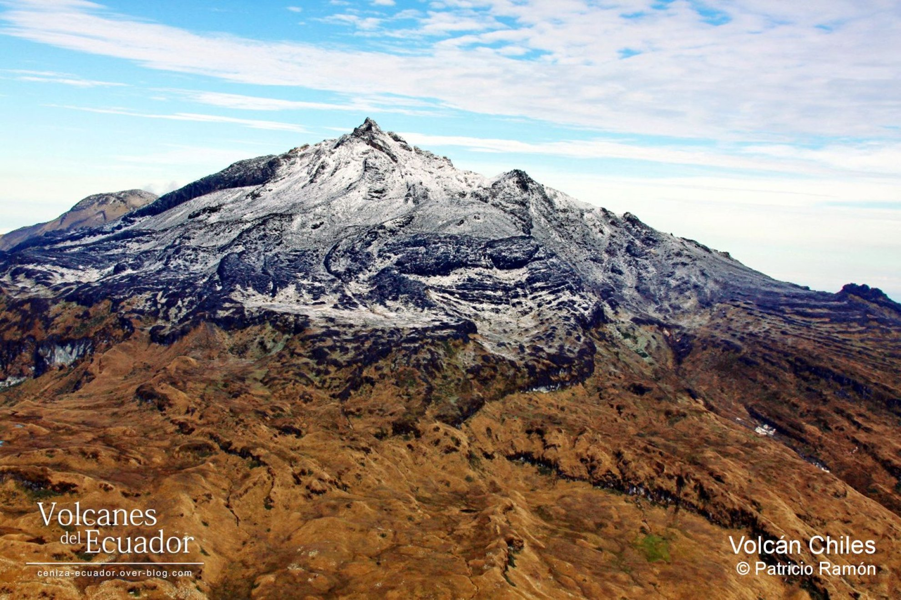
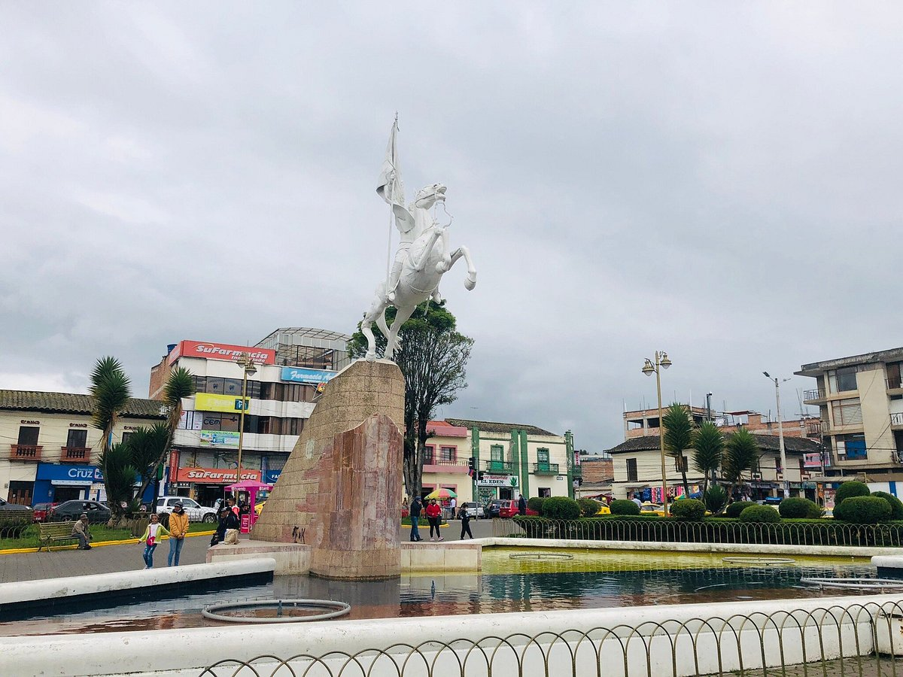
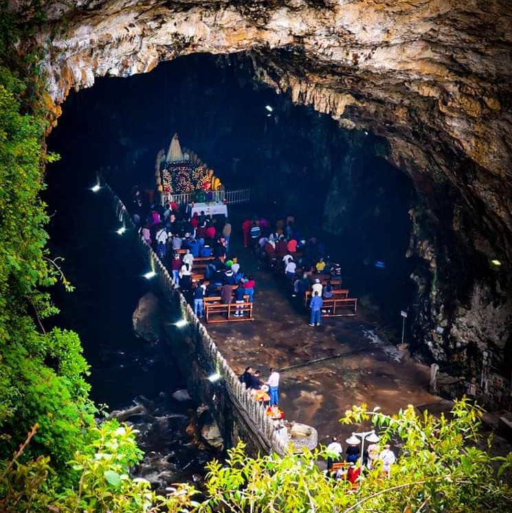
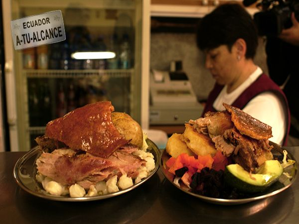

Cementerio de Tulcán
📍 Av. Cotopaxi y Cementerio, Tulcán
Esculturas de ciprés con figuras precolombinas, faúnicas y geométricas. Obra iniciada por José María Azael Franco.
Actividad: Fotografías y Recorrido Guiado
📍 Av. Cotopaxi y Cementerio, Tulcán
Esculturas de ciprés con figuras precolombinas, faúnicas y geométricas. Obra iniciada por José María Azael Franco.
Actividad: Fotografías y Recorrido Guiado
📍 Parroquia Tufiño (A 38 km de Tulcán)
Ecosistema único de páramo a más de 4.000 m.s.n.m., famoso por los frailejones gigantes y aguas termales subterráneas.
Actividad: Senderismo y Trekking
📍 Centro Urbano de Tulcán
Centro neurálgico de encuentro social con monumentos históricos, áreas verdes bien cuidadas y ambiente familiar.
Actividad: Caminata y Recreación
📍 Cantón Montúfar / Cercanías a Tulcán
Impresionante caverna natural sobre el río Aparagual donde reposa la Virgen de la Paz. Sitio de alta peregrinación.
Actividad: Turismo Religioso y Espeleología
📍 Calle Olmedo y Sucre, Tulcán
Centro cultural que alberga museos con piezas arqueológicas de la fase Pasto, pinturas e historia fronteriza.
Actividad: Exposiciones Culturales
📍 Centro Histórico de Tulcán
El lugar perfecto para degustar la gastronomía carchense: Hornado con papas cocinadas con cáscara y queso frito.
Actividad: Tour Gastronómico